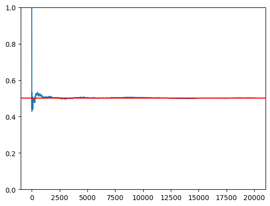
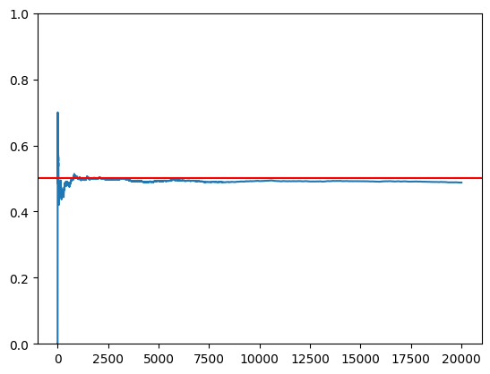
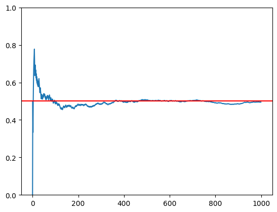
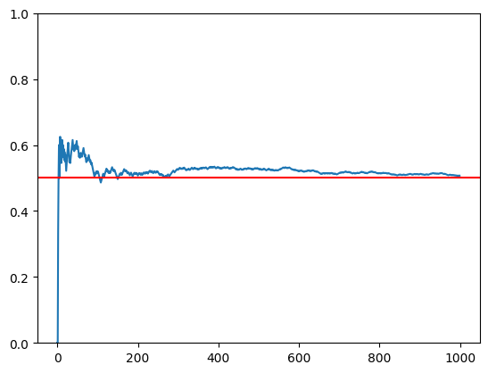
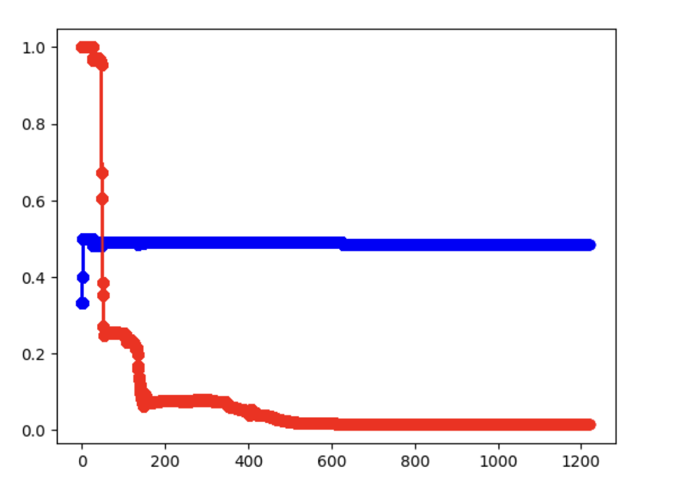

%%{init: {"theme": "base", "themeVariables": {"primaryColor": "#E3F2FD", "primaryTextColor": "#111", "primaryBorderColor": "#90CAF9", "lineColor": "#18A3A3", "secondaryColor": "#FFF3E0", "tertiaryColor": "#F3E5F5"}, "flowchart": {"curve": "basis", "padding": 35}, "fontSize": "18px"}}%%
flowchart TD
A["第一階段：大數法則驗證 "] --> B["建構 H 閘量子電路 "]
B --> C["在模擬器上執行（20,000 次） "]
B --> D["在 IBMQ 硬體上執行（20,000 次） "]
C --> E["累積 P(0) 視覺化 "]
D --> E
E --> F["比較收斂行為 "]
F --> G["第二階段：貝氏推論 "]
G --> H["將測量結果匯出為 CSV "]
H --> I["從前 50 筆觀測值計算先驗分佈 "]
I --> J["迭代貝氏更新（20,000 輪） "]
J --> K["求取 P(0) 的 MAP 估計值 "]
style A fill:#E3F2FD,stroke:#90CAF9
style B fill:#E3F2FD,stroke:#90CAF9
style C fill:#E8F5E9,stroke:#A5D6A7
style D fill:#FFF3E0,stroke:#FFCC80
style E fill:#F3E5F5,stroke:#CE93D8
style F fill:#F3E5F5,stroke:#CE93D8
style G fill:#FFF3E0,stroke:#FFCC80
style H fill:#FFF3E0,stroke:#FFCC80
style I fill:#FFF3E0,stroke:#FFCC80
style J fill:#FFF3E0,stroke:#FFCC80
style K fill:#FCE4EC,stroke:#F48FB1
量子貝氏推論
量子貝氏推論：實驗驗證與延伸 · 國立中興大學 應用數學系
科技部大專生研究計畫 計畫編號 112-2813-C-005-038-E · 指導教授：戴淯琮 教授 · 執行期間：2023/07 – 2024/02
概述
本論文研究量子電腦的輸出是否符合貝氏機率定律。使用 IBM 的 Qiskit 框架，在真實 IBMQ 硬體與模擬器上測試量子位元測量的大數法則，並運用貝氏更新分析量子位元測量結果。
關鍵發現：真實量子電腦與模擬器的行為截然不同——量子電腦的累積機率呈現出系統性偏離理論值 0.5 的趨勢，對量子態的客觀隨機性提出了根本性的疑問。
研究方法
第一階段：大數法則驗證
我們對單一量子位元施加 Hadamard 閘（H 閘），使其進入疊加態 \(|+\rangle = \frac{1}{\sqrt{2}}(|0\rangle + |1\rangle)\)，然後測量 20,000 次。若量子測量遵循古典機率，累積 \(P(|0\rangle)\) 應收斂至 0.5。
| 設置 | 後端 | 測量次數 | 預期 \(P(0)\) |
|---|---|---|---|
| H 閘 \(\rightarrow\) 測量 | ibmq_qasm_simulator |
20,000 | 0.5 |
| H 閘 \(\rightarrow\) 測量 | ibm_osaka（真實硬體） |
20,000 | 0.5 |
模擬器結果
模擬器的累積機率平滑地收斂至 0.5，完美遵循大數法則：

真實量子電腦結果
真實量子電腦（IBM Osaka）呈現系統性的向下偏移——累積機率未收斂至 0.5：

關鍵發現： 模擬器完美遵循大數法則，但真實量子電腦表現出持續的偏差。此差異暗示：(1) 硬體雜訊引入了系統性誤差；(2) 樣本數量不足；或 (3) 量子疊加態可能無法產生真正的客觀隨機性。
近距離比較（1,000 次測量）
以每次 1,000 次測量進行更細緻的觀察：

模擬器： 快速且乾淨地收斂至理論值 0.5。

IBMQ： 明顯較大的變異數與較慢的收斂速度，伴隨持續的振盪。
第二階段：量子輸出的貝氏推論
在第二階段中，我們將量子測量結果視為觀測資料，並運用貝氏更新推論最可能的機率參數 \(\theta = P(|0\rangle)\)。
步驟：
- 從 IBMQ 收集 20,000 筆測量結果，作為二元序列（0/1）
- 使用前 50 筆觀測值建構 \(\theta\) 的先驗分佈
- 迭代應用貝氏定理，進行 19,950 輪更新
- 求取 \(\theta\) 的 MAP（最大後驗機率） 估計值
貝氏收斂

貝氏推論結果： 在先驗密度 \(n = 50\) 下，MAP 估計值收斂至 \(\theta \approx 0.483\)，後驗機率為 0.955。這證實了量子硬體的系統性偏差——貝氏推論正確地辨識出真實硬體上的 \(P(|0\rangle)\) 並非恰好等於 0.5。
結論
| 面向 | 模擬器 | 真實量子電腦 |
|---|---|---|
| 大數法則 | 完美符合 | 違反（系統性偏移） |
| 收斂至 0.5 | 是（平滑） | 否（偏向約 0.49） |
| 貝氏 MAP 估計值 | \(\theta \approx 0.500\) | \(\theta \approx 0.483\) |
| 變異數 | 低 | 高（含雜訊） |
差異的三種可能解釋：
- 樣本數量不足——受限於 IBMQ 佇列限制，20,000 次測量對量子硬體而言可能不夠
- 硬體雜訊與誤差——現行 IBMQ 裝置存在閘極誤差、退相干及讀取誤差，導致系統性偏差
- 量子隨機性不同於古典隨機性——疊加態可能遵循測量理論的機率模型（如 Gleason 定理），未必完全符合 Kolmogorov 公理
技術工具： Python, Qiskit, IBMQ (ibm_osaka), matplotlib, csv · 計畫補助： NSTC 112-2813-C-005-038-E
原始碼
本研究開發的 Qiskit 程式已發布於 GitHub：
- i_use_quantum_do_something_cool —— 量子電路程式碼、模擬器/硬體比較、貝氏分析筆記本